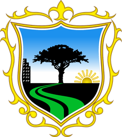

Municipalidad
de San Borja
TRANSPORTE SOSTENIBLE EN EL DISTRITO DE SAN BORJA
VISOR DE RED DE CICLOVÍAS PROYECTADAS Y CICLOPARQUEADEROS
×
Infraestructura
Transparencia
Leyenda
Capas
×
Límite de San Borja
Ciclovías Proyectadas
Cicloparqueaderos existentes
Cicloparqueaderos propuestos
Situación del parqueadero
Existentes
Propuestos
Transparencia del mapa
×